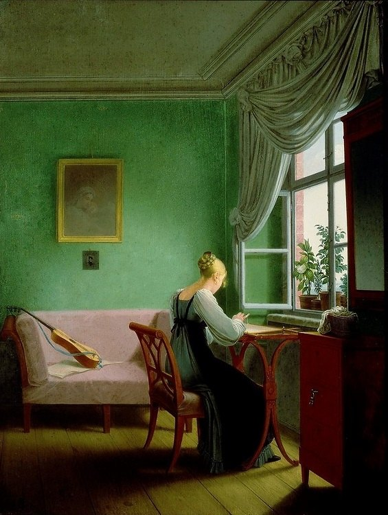
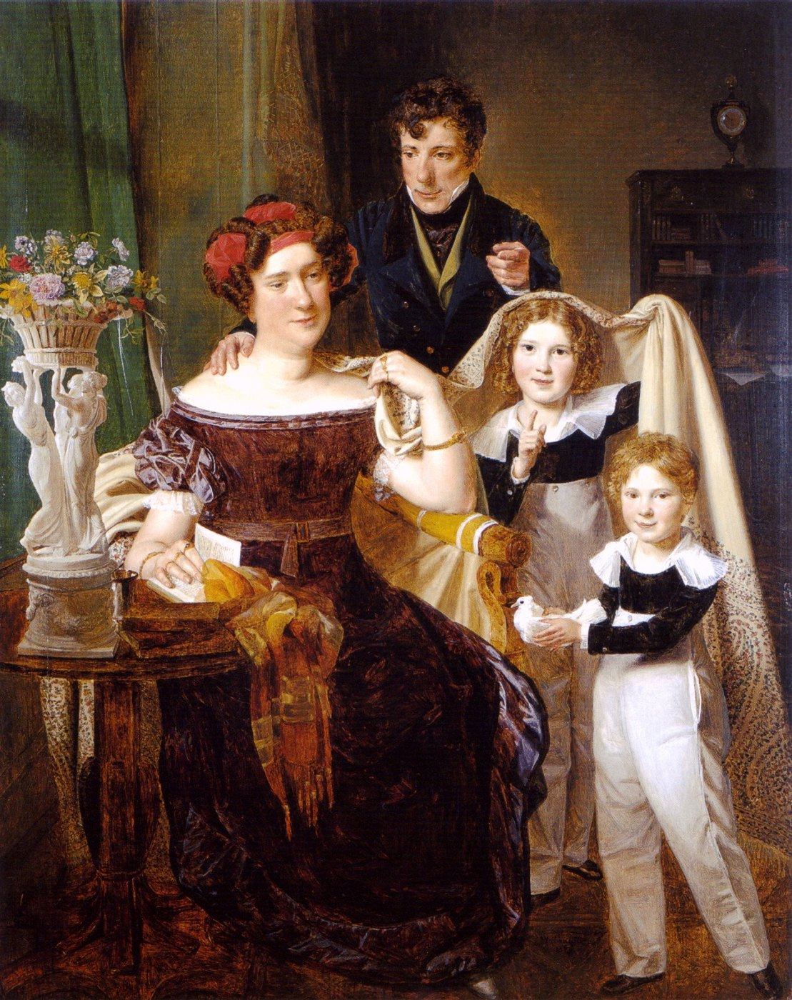
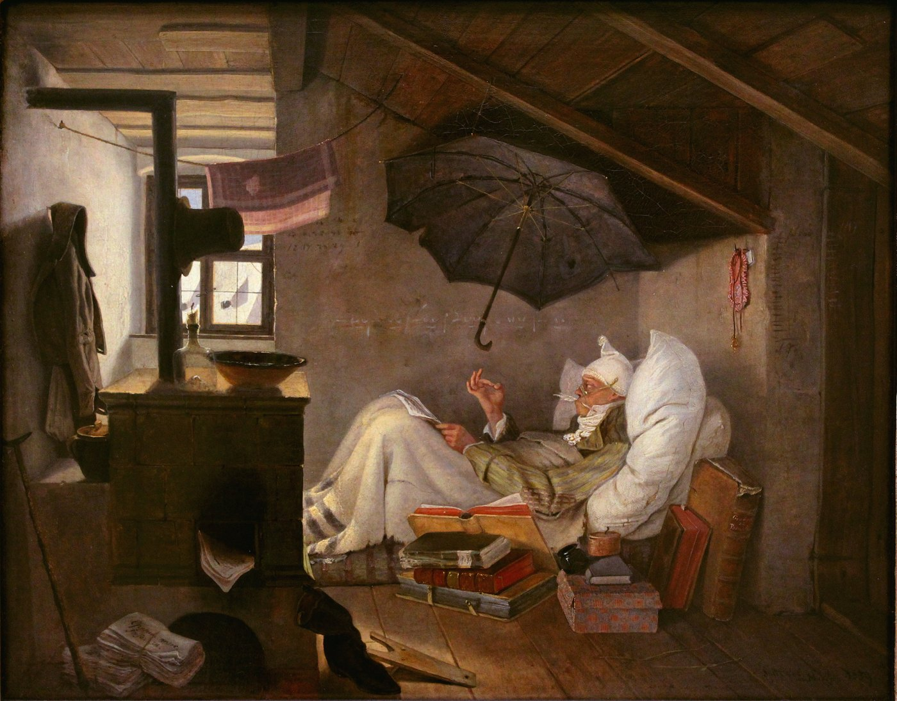
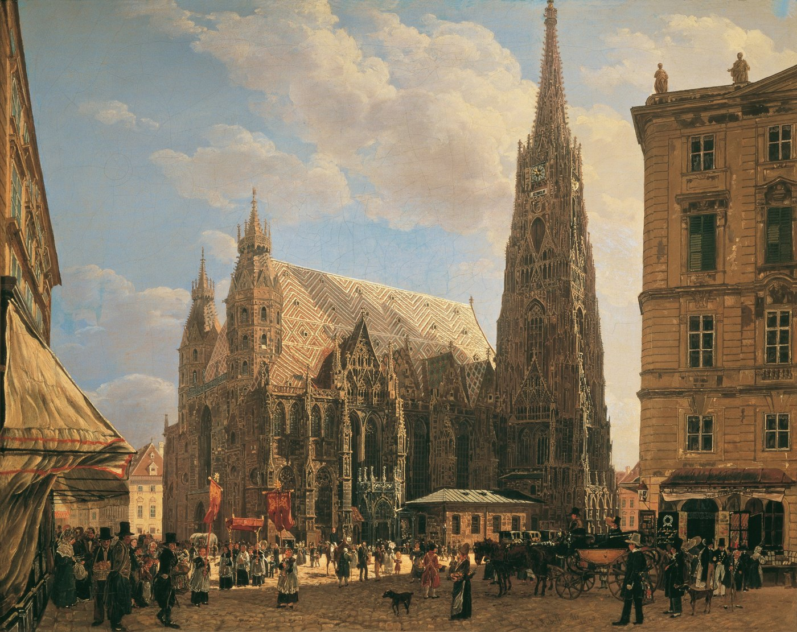

독일 · 실내와 사적 생활
비더마이어(Biedermeier)는 보통 1815년 나폴레옹 전쟁 종결과 빈 체제의 성립에서 1848년 혁명까지 독일어권 중부유럽, 특히 오스트리아와 독일 여러 지역에서 전개된 문화적 시대와 양식을 가리킨다. 하나의 선언을 가진 엄격한 회화학파라기보다 회화·가구·실내장식·생활문화 전반에 나타난 시민적 미감에 가깝다. 웅대한 역사와 영웅 대신 가족, 실내, 일상, 도시, 정원과 가까운 자연이 중요한 주제가 되었다.
미술사적으로는 하나의 시대양식 또는 문화적 경향으로 분류하는 것이 가장 정확하다. 낭만주의나 사실주의처럼 특정한 회화철학 하나로 모든 작품을 묶기보다, 1815–1848년 중부유럽의 정치·사회환경 속에서 나타난 사적 생활, 시민적 안정, 세밀한 관찰, 실용적 우아함을 공유한다.
전쟁·혁명·신화보다 가족, 독서, 바느질, 산책, 작은 도시생활을 다룬다.
공적 정치공간보다 집과 방, 정원 같은 사적 공간이 중요해진다.
성장하는 중산층과 가족이 초상화와 풍속화의 중심 후원자·주제가 된다.
낭만주의의 격정보다 깨끗한 윤곽, 세밀한 표면, 차분한 관찰이 두드러진다.
가구와 실내에서도 궁정적 장식보다 단순하고 기능적이며 편안한 우아함을 선호한다.
나폴레옹 전쟁 이후 유럽의 왕정질서를 복원하고 정치적 안정을 추구한다.
오스트리아를 중심으로 자유주의·민족주의 운동에 대한 감시와 검열이 강화된다.
전문직·상공업 시민층의 경제적 비중이 커지고 가정과 실내가 사회적 정체성을 보여주는 공간이 된다.
초상·풍속·도시풍경·가구·생활용품 시장이 확대된다.
중부유럽의 혁명으로 1815년 이후의 보수적 정치질서가 크게 흔들리며 비더마이어 시대 구분의 종점이 된다.
| 비교 항목 | 낭만주의 | 비더마이어 |
|---|---|---|
| 핵심 관심 | 격정·숭고·자유·무한·혁명 | 일상·가정·안정·관찰·시민생활 |
| 자연 | 인간을 압도하거나 정신적·종교적 의미를 지닌 자연 | 가까이 관찰할 수 있는 풍경과 생활환경 |
| 인물 | 고독한 개인·혁명가·극적 인간 | 가족·시민·직업인·평범한 생활인 |
| 감정 | 극적이고 격렬함 | 절제되고 친밀함 |
| 관람 경험 | 경외·격정·상상 | 친숙함·세밀한 관찰·은근한 유머 |




| 관찰 항목 | 비더마이어의 경향 |
|---|---|
| 주제 | 가족·독서·음악·수공예·산책·시민 초상·일상생활·도시풍경 |
| 인물 | 영웅보다는 시민·가족·아이·직업인 등 구체적인 생활인 |
| 공간 | 친밀하고 실제 사용되는 실내, 정원, 도시와 가까운 풍경 |
| 표현 | 세밀한 관찰, 명료한 윤곽, 비교적 매끄러운 표면 |
| 정서 | 차분함·친밀함·안정감, 때로는 소박한 유머와 아이러니 |
| 후원 | 궁정·교회뿐 아니라 성장하는 시민계층의 초상·실내·생활문화 수요 |
| 디자인 | 기능성과 편안함, 목재의 재질을 살리는 단순한 가구와 절제된 장식 |
비더마이어는 다른 사조처럼 프랑스·영국·러시아 전역에 동일한 이름으로 확산된 국제 운동은 아니다. 독일어권 중부유럽의 특정한 역사·사회환경과 결합한 시대양식이므로, 비슷한 동시대 회화를 억지로 모두 “비더마이어”라고 묶지 않는 것이 중요하다.
| 국가·지역·세부 사조 | 지역적 특징 | 대표 화가·제작자 |
|---|---|---|
| 오스트리아 · 빈 — 오스트리아 비더마이어 |
| 발트뮐러, 아메를링, 다나우저, 루돌프 폰 알트 |
| 독일 여러 국가 — 독일 비더마이어 |
| 게오르크 프리드리히 케르스팅, 카를 슈피츠베크 |
| 보헤미아·헝가리 등 중부유럽 — 중부유럽 비더마이어 |
| 추가 검토 필요 |
1848년 혁명은 빈 체제의 보수적 안정과 사적 시민문화가 유지되던 정치적 환경을 크게 뒤흔들었다. 이후 산업화·도시화와 사회갈등이 더욱 가시화되고, 회화에서도 동시대 사회를 보다 직접적으로 다루는 사실주의가 힘을 얻게 된다.
비더마이어는 “소박한 취향”이 아니라 나폴레옹 전쟁 이후 검열과 안정 속에서 시민 가정, 실내, 초상, 작은 풍경이 중심이 된 독일권 문화다.
본문에 이름이 등장하는 주요 화가는 아래처럼 대표작 한 점과 함께 읽어야 한다. 작품은 해당 사조의 핵심 특징을 실제 화면에서 확인하도록 고른 것이다.
선명한 빛과 세밀한 관찰로 종교 행사도 시민 생활의 구체적 장면처럼 보이게 한다.
정치적 영웅 대신 다락방의 독서와 가난한 지식인을 유머러스하게 그린다.
음악·문학·사교가 결합한 시민 교양의 무대를 보여준다.
화려한 역사성보다 개인의 표정, 의복, 실내적 친밀함이 강조된다.